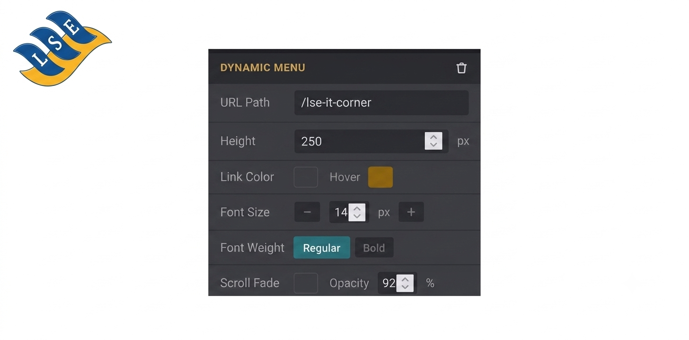

LSE Dynamic Menu is a website builder snippet that automatically generates a multi-level Bootstrap 5 dropdown navigation menu from any URL path on your Odoo website — no manual menu editing required.
Just drag the snippet onto your page, set the root URL path
(e.g. /services), and the menu self-assembles from
your published child pages.
website.menu and published website.page recordsEach installation is validated against the LSE License Server. A 30-day grace period applies for evaluation before a license key is required.
Install the module, open the website editor, drag the LSE Dynamic Menu snippet from the LSE category, and configure the root path in the options panel.
Odoo 19 • Website module • No external dependencies. Supported and maintained by LSE Group.
Commercial support: support@lumanet.info
Published by LSE Group — Enterprise Odoo Solutions